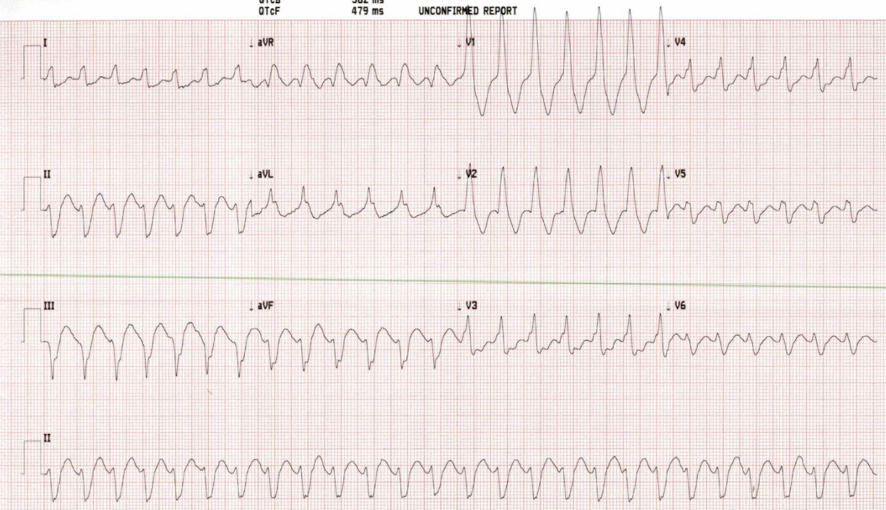
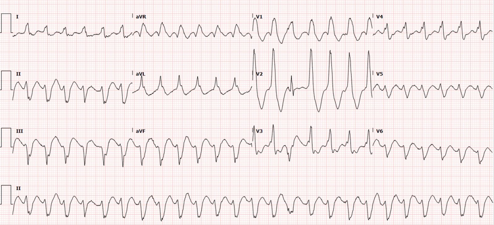
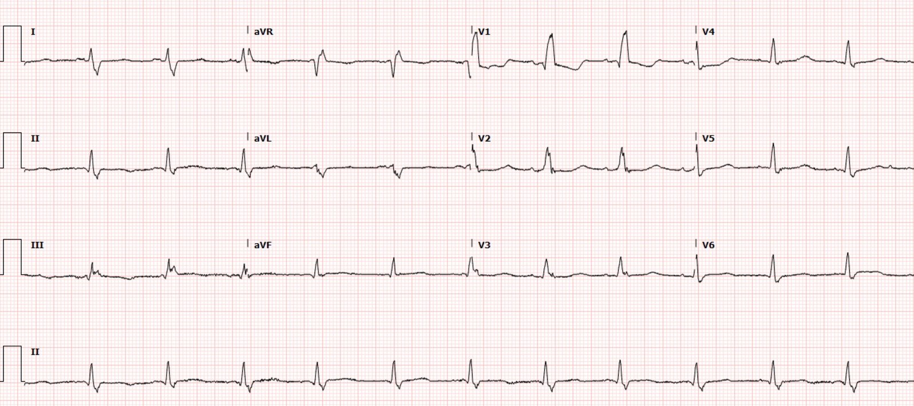
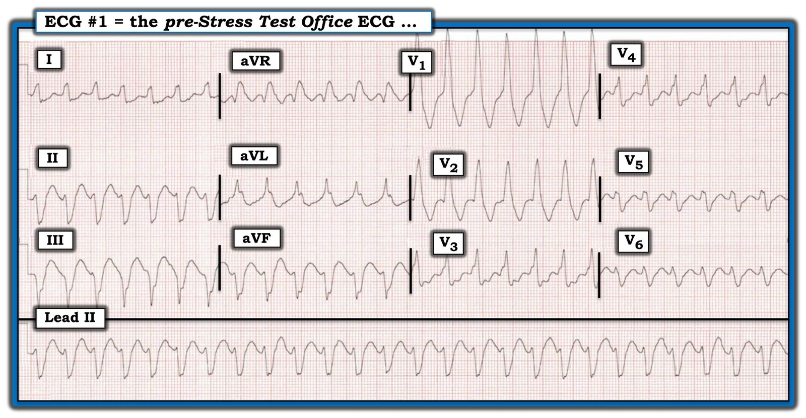
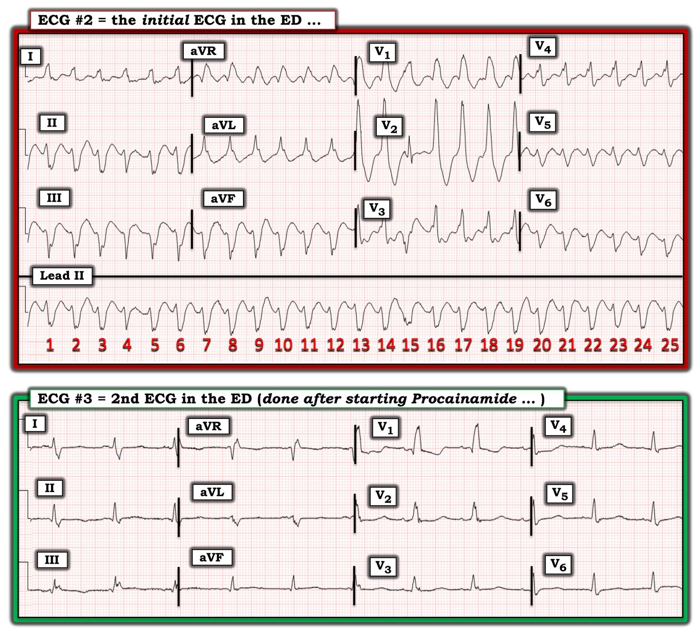
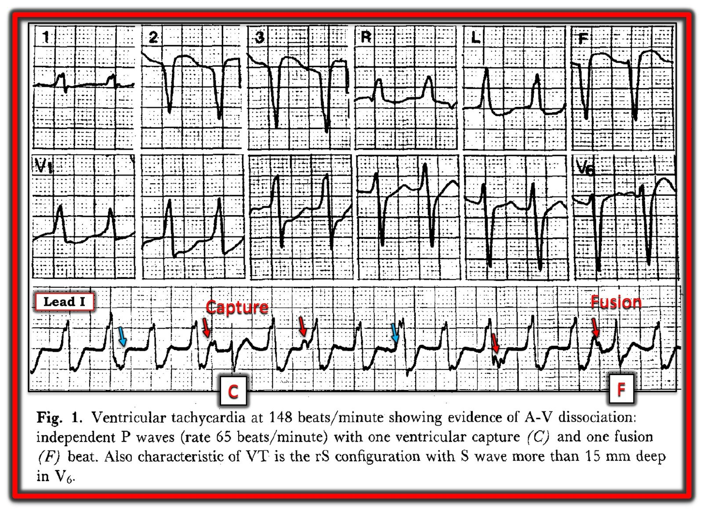
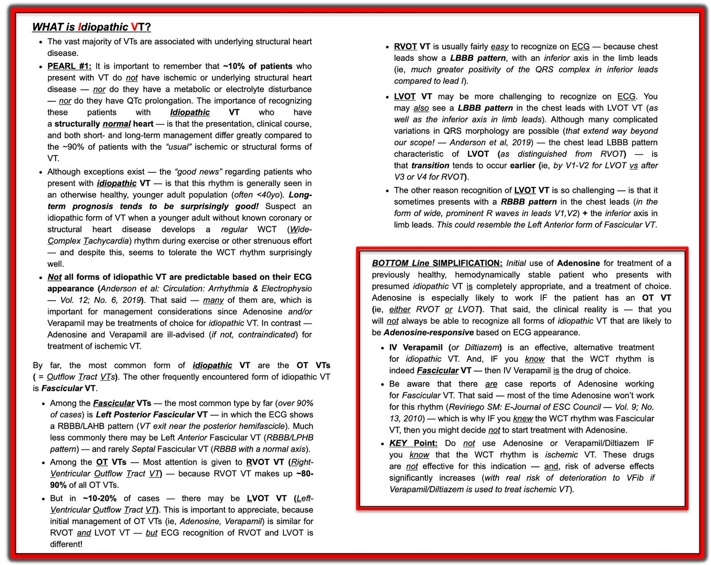

02/04/2022 — Một người đàn ông 50 mấy tuổi không triệu chứng với tần số tim 160 mấy – chẩn đoán là gì? Bạn sẽ xử trí thế nào?
Bản dịch tiếng Việt của bài "An asymptomatic man in his 50s with heart rate in the 160s – what is the diagnosis? How will you manage this?" – Dr. Smith’s ECG Blog. Giữ nguyên toàn bộ 9 hình ảnh của bản gốc.
Tác giả: Pendell Meyers
Một người đàn ông cuối độ tuổi 50 có tiền sử bệnh động mạch vành (CAD) đã phẫu thuật bắc cầu chủ vành (CABG), bệnh phổi tắc nghẽn mạn tính (COPD), hút thuốc lá, xơ gan và các bệnh đồng mắc khác, đến khám ngoại trú theo lịch hẹn làm nghiệm pháp gắng sức; nghiệm pháp này được chỉ định vì vài tháng gần đây ông có khó thở khi gắng sức, hồi hộp đánh trống ngực và các cơn tiền ngất. Khi ông đến phòng khám để làm nghiệm pháp gắng sức, các dấu hiệu sinh tồn sàng lọc trước khi làm bất kỳ xét nghiệm hay can thiệp nào chỉ có một điểm đáng chú ý là tần số tim 160 lần/phút. Ông phủ nhận hoàn toàn mọi triệu chứng.
Một điện tâm đồ 12 chuyển đạo được ghi tại phòng khám:


Điện tâm đồ cho thấy nhịp nhanh QRS rộng, đều, đơn dạng. Tôi đo được khoảng 60-80 ms từ điểm khởi đầu QRS đến đỉnh sóng R ở một số chuyển đạo, với tổng thời gian QRS khoảng 170-180 ms (thời gian QRS do máy tính đo là 182 ms).
Do đó, chẩn đoán phân biệt nhịp là VT với nhịp nhanh xoang (ST)/SVT/cuồng nhĩ kèm dẫn truyền lệch hướng. Ngay cả khi không cần thêm chuyên môn về điện tâm đồ, VT vẫn có khả năng cao hơn hẳn khi xét đến tuổi, tiền sử bệnh tim, các bệnh đồng mắc, độ rộng QRS rất lớn, và đơn giản là thực tế VT vốn đã phổ biến hơn SVT kèm dẫn truyền lệch hướng ngay cả trước khi xét đến thông tin bệnh sử.
Hình dạng QRS có thể được xem là hình dạng RBBB và LAFB, điều có thể gặp trong SVT/ST/cuồng nhĩ kèm RBBB/LAFB, VT vô căn phân nhánh sau, v.v.
Tôi sẽ coi đây là VT cho đến khi chứng minh được điều ngược lại. Adenosine hoàn toàn an toàn và hợp lý, nhưng ca này khó có khả năng là SVT, vì vậy tôi sẽ không bận tâm dùng nó. Nếu đang cân nhắc VT vô căn phân nhánh sau, có thể cân nhắc verapamil, nhưng thuốc này có thể bị chống chỉ định ở bệnh nhân này, người nhiều khả năng bị VT và đã biết có EF giảm.
Nếu bạn chưa quen với các VT vô căn, hãy đọc bài này:
Idiopathic Ventricular Tachycardias for the EM Physician (Các nhịp nhanh thất vô căn dành cho bác sĩ cấp cứu)
Tôi sẽ coi đây là VT và điều trị như VT. Các lựa chọn là:
1) Bằng thuốc (procainamide, amiodarone, v.v.) hoặc
2) Bằng điện (an thần và sốc điện chuyển nhịp đồng bộ).
Ông được chuyển đến khoa cấp cứu (ED) để đánh giá.
Nhân viên cấp cứu ngoài viện ghi nhận nhịp không hề thay đổi trong suốt quá trình vận chuyển. Bệnh nhân vẫn không có triệu chứng, các dấu hiệu sinh tồn khác bình thường.
Điện tâm đồ của ông lúc đến viện như sau:


Chúng tôi vốn đã nghi ngờ đây là VT, và các nhát hỗn hợp này chỉ càng khẳng định thêm điều đó. Tuy nhiên, xin đừng tin rằng nhát hỗn hợp là chính xác tuyệt đối để chẩn đoán VT:
Fusion Beat During Supraventricular Tachycardia: No criterion is absolutely accurate in differentiating wide complex tachycardia (Nhát hỗn hợp trong nhịp nhanh trên thất: không có tiêu chuẩn nào chính xác tuyệt đối trong phân biệt nhịp nhanh QRS rộng)
Bác sĩ điện sinh lý được mời hội chẩn và khuyến nghị liều nạp procainamide 2 gam truyền trong 2 giờ, và y lệnh này đã được thực hiện (tức 12,5 mg/phút, với tổng liều 14 mg/kg ở bệnh nhân này).
10 phút sau khi bắt đầu truyền procainamide (sau khoảng 125 mg procainamide), bệnh nhân vẫn không có triệu chứng nhưng đã chuyển nhịp thành như sau:


Việc nhịp xoang có QRS chỉ với RBBB (không có LAFB) là một dấu hiệu mạnh khác cho thấy phức bộ QRS ban đầu trong cơn nhịp nhanh thực sự có nguồn gốc thất (VT).
Bệnh nhân được nhập viện để thăm dò thêm.
Siêu âm tim nhìn chung không thay đổi so với trước, với rối loạn vận động thành đã biết, EF 45%. Bác sĩ tim mạch đánh giá rằng khoảng QT khoảng 500 ms, sau khi hiệu chỉnh, gần với giới hạn bình thường khi xét đến RBBB với thời gian QRS 150 ms.
Bác sĩ tim mạch diễn giải đây là “VT do sẹo (scar-mediated VT).”
Sotalol được khởi trị để phòng ngừa rối loạn nhịp, với kế hoạch theo dõi sát tình trạng COPD nặng lên hoặc QT kéo dài. Sotalol có cả tác dụng chẹn beta và tác dụng nhóm III (chẹn kênh kali), nghĩa là nó trực tiếp kéo dài khoảng QT. Amiodarone được tránh dùng do COPD và xơ gan. Một máy khử rung tim cấy được (ICD) đã được cấy do VT kèm các cơn ngất. Không có thêm rối loạn nhịp nào xảy ra. Bệnh nhân được xuất viện.
Procainamide là thuốc chẹn kênh natri nhóm 1A, nghĩa là nó làm chậm sự lan truyền điện thế hoạt động từ tế bào này sang tế bào khác, làm giảm tốc độ dẫn truyền và kéo dài QRS và QT. Dù nền tảng y văn nói chung còn yếu, procainamide thường được xem là thuốc lựa chọn cho VT đơn dạng ổn định sau kết quả của nghiên cứu Procamio, nghiên cứu so sánh procainamide với amiodarone trong bối cảnh VT đơn dạng ổn định và nghiêng về procainamide, cho thấy hiệu quả cao gần gấp đôi với tác dụng bất lợi chỉ bằng một nửa. Chống chỉ định tương đối của cả hai thuốc bao gồm QT kéo dài đã biết, đặc biệt nếu rối loạn nhịp được cho là do QT kéo dài gây ra.
Một lợi ích khác: Procainamide rất hiệu quả trong cắt cơn SVT. Vì vậy nếu bạn chẩn đoán sai, nhịp vẫn có thể chuyển về bằng procainamide!
Xem bài viết và podcast của RebelEM về thử nghiệm PROCAMIO để biết thêm:
Liều procainamide:
Liều nạp tĩnh mạch là 10 đến 17 mg/kg, thường truyền với tốc độ 20-50 mg/phút.
Cách dùng thay thế là 100 mg mỗi 5 phút ở bệnh nhân người lớn cho đến liều tối đa 17 mg/kg.
Một phác đồ liều thay thế khác được dùng trong Phác đồ Tích cực Ottawa (Ottawa Aggressive Protocol, để chuyển nhịp bằng thuốc rung nhĩ): 1 g trong 60 phút.
Liều nạp được truyền cho đến khi cắt được cơn rối loạn nhịp nhanh, hoặc bệnh nhân bị tụt huyết áp, hoặc QRS giãn rộng hơn 50% so với ban đầu, hoặc đã dùng đến liều tối đa 17 mg/kg.
Sau khi đạt được hiệu quả lâm sàng mong muốn, liều duy trì thường được bắt đầu với tốc độ 1-4 mg/phút.
Luyện tập với nhiều bài khác bàn về VT so với SVT:
Wide Complex Tachycardia: Lewis Leads Do Not Differentiate VT from SVT with Aberrancy (Nhịp nhanh QRS rộng: chuyển đạo Lewis không phân biệt được VT với SVT kèm dẫn truyền lệch hướng)
Wide Complex Tachycardia and Cyanosis (Nhịp nhanh QRS rộng và tím tái)
A 20-something with DKA and a regular wide complex tachycardia (Bệnh nhân 20 mấy tuổi bị DKA và nhịp nhanh QRS rộng đều)
Ventricular Tachycardia? Or SVT with Aberrancy? (Nhịp nhanh thất? Hay SVT kèm dẫn truyền lệch hướng?)
Wide Complex Tachycardia after Ingestion and Seizure (Nhịp nhanh QRS rộng sau ngộ độc đường uống và co giật)
Wide Complex Tachycardia Refractory to Anti-dysrhythmics and Cardioversion. (Nhịp nhanh QRS rộng kháng trị với thuốc chống loạn nhịp và sốc điện chuyển nhịp.)
Very Wide and Very Fast, What is it? How would you treat? (Rất rộng và rất nhanh, đó là gì? Bạn sẽ điều trị thế nào?)
A 40-something without past history presents with wide complex tachycardia and crushing chest pain (Bệnh nhân 40 mấy tuổi không có tiền sử bệnh, đến viện vì nhịp nhanh QRS rộng và đau ngực dữ dội như bị đè ép)
Toothache, incidental Wide Complex Tachycardia (Đau răng, tình cờ phát hiện nhịp nhanh QRS rộng)
Wide-complex tachycardia: VT, aberrant, or “other?” (Nhịp nhanh QRS rộng: VT, dẫn truyền lệch hướng, hay “nguyên nhân khác?”)
An unstable wide complex tachycardia resistant to electrical cardioversion (Nhịp nhanh QRS rộng không ổn định, kháng với sốc điện chuyển nhịp)
Is it VT or SVT with Aberrancy? (Đây là VT hay SVT kèm dẫn truyền lệch hướng?)
Regular Wide Complex Tachycardia. What is the Diagnosis? (Nhịp nhanh QRS rộng đều. Chẩn đoán là gì?)
60-something with wide complex tachycardia: from where does the rhythm originate? (Bệnh nhân 60 mấy tuổi bị nhịp nhanh QRS rộng: nhịp xuất phát từ đâu?)
A Young Woman with A Wide Complex Regular Tachycardia. (Một phụ nữ trẻ bị nhịp nhanh QRS rộng đều.)
A middle aged man with unwitnessed cardiac arrest (Một người đàn ông trung niên bị ngừng tim không có người chứng kiến)
Sudden Chest pain and SOB with a Wide Complex Tachycardia (Đau ngực và khó thở đột ngột kèm nhịp nhanh QRS rộng)
Several Wide Complex Rhythms in One Patient. Test yourself: Will You See What I Did Not See? (Nhiều nhịp QRS rộng ở cùng một bệnh nhân. Tự kiểm tra: bạn có thấy được điều tôi đã không thấy?)
Những điểm cần học:
Chẩn đoán phân biệt của nhịp nhanh QRS rộng đơn dạng gồm VT với nhịp nhanh xoang (ST)/SVT/cuồng nhĩ kèm dẫn truyền lệch hướng, tất cả đều có thể kèm hoặc không kèm tăng kali máu.
VT đơn giản là phổ biến hơn SVT kèm dẫn truyền lệch hướng, và VT càng có khả năng cao hơn khi tuổi càng cao, tiền sử bệnh tim càng nặng, và thời gian QRS càng dài. Có nhiều phương pháp đã được mô tả nhằm phân biệt SVT với VT, nhưng cho đến nay chưa phương pháp nào cho thấy đủ hiệu quả và giá trị ngoại kiểm. Hãy coi là VT khi có bất kỳ nghi ngờ nào. Nếu quan tâm, hãy tìm hiểu thêm tại các đường link ở trên.
Procainamide là lựa chọn tốt để chuyển nhịp bằng thuốc cho VT đơn dạng ổn định.
Tài liệu tham khảo
1. Steil IG, Clement CM, Perry JJ et al. Association of the Ottawa Aggressive Protocol with rapid discharge of emergency department patients with recent-onset atrial fibrillation or flutter. CJEM 2010;12(3):181-91.
2. Komura S, Chinushi M, Furushima H. et al. Efficacy of Procainamide and Lidocaine in Terminating Sustained Monomorphic Ventricular Tachycardia. Circulation May 2010 Vol 72
3. Ortiz M et al. Randomized Comparison of Intravenous Procainamide vs. Intravenous Amiodarone for the Acute Treatment of Tolerated Wide QRS Tachycardia: the PROCAMIO Study. Eur Heart J 2016. PMID: 27354046

===================================
MY Comment by KEN GRAUER, MD (4/2/2022):
===================================
When Dr. Meyers showed me this case the other day — I literally begged him to post it as soon as possible. There are many Lessons to be learned!
For clarity — I’ll reproduce and label the ECGs in today’s case. ECG #1 was obtained in the office on a man in his late 50s, with a history of significant coronary disease.
- The patient reported a recent symptoms dyspnea on exertion of dyspnea on exert, palpitations and presyncopal episodes in recent months. Despite this — He was hemodynamically stable and absolutely asymptomatic at the time the ECG in Figure-1 was recorded.


MY Thoughts on the Initial ECG:
The ECG in Figure-1 has to be interpreted as VT (Ventricular Tachycardia) — until proven otherwise! As I have discussed the user-friendly and time-efficient criteria I favor for distinction between VT vs SVT rhythms (with either preexisting BBB or aberrant conduction) — I’ll refer those interested in more detail to My Comments in the May 5, 2020 and February 14, 2022 posts in Dr. Smith’s Blog. Reasons why I’d estimate the likelihood of VT for the rhythm in Figure-1 at over 90% include the following.
- The ECG in Figure-1 is a regular WCT ( = Wide-Complex Tachycardia) at ~160/minute, without clear sign of atrial activity. Pre-Test Likelihood that a regular WCT without P waves will turn out to be VT is ~80% in the literature. This figure goes up to ~90% Pre-Test Likelihood — IF the patient is “older” (ie, an adult of a “certain” age) — and if the patient has underlying heart disease. Therefore — Statistical likelihood that the regular WCT without P waves in Figure-1 will turn out to be VT is at least 90% even before we look at the actual ECG!
- Because of this 1st bullet — We need to always assume VT for such rhythms until we prove otherwise, and treat accordingly. This does not mean that all patients need to be immediately shocked — but it does mean that since 90+% of such rhythms will turn out to be VT, that we need to assume VT until proven otherwise.
- Now that we are looking closer at ECG #1 — reasons why statistical likelihood of VT goes up over 90% are: i) There is almost extreme axis deviation (ie, the QRS is all negative in lead III — albeit not all negative in lead aVF); ii) The QRS is very wide (ie, ~0.15 second); iii) There is delay in initial activation (ie, Note how wide the initial R waves are in leads V4, V5, V6); and, iv) QRS morphology does not resemble any known form of conduction defect.
- It is this last criterion (ie, not resembling any known form of conduction defect) — that is the most suggestive of VT to me in today’s case. Although there is superficial resemblance of QRS morphology to RBBB conduction (because of the upright QRS in lead V1 and the wide terminal S wave in lead V6) — the lack of any S wave at all in both high lateral leads (ie, leads I and aVL) — is distinctly against this representing RBBB conduction. The predominantly negative QRS in the inferior leads superficially resembles LAHB conduction — but most of the time (unless there has been a large prior inferior infarction) there will be more of an initial r wave in these inferior leads when the rhythm is supraventricular with LAHB conduction.
- To Emphasize: Statistical odds of over 90% is not the same as 100% likelihood. There is almost always the possibility of exceptions (ie, prior infarction or cardiomyopathy that might result in a very abnormal baseline tracing). But over 90% likelihood is high enough to support the contention that the rhythm is VT until proven otherwise.
- Lewis Leads: Use of another lead system is an easy-to-do but often forgotten application — that can be highly effective for revealing underlying atrial activity that was not evident on the standard ECG tracing (Please see my last Figure in the November 12, 2019 post of Dr. Smith’s Blog for a reminder on how to apply Lewis Leads).
Lesson #1: Some Patients remain in VT for Hours (and even Days)!
I am aware of many cases of sustained VT in which the patient remained awake and alert for hours. I’m also aware a number of cases (including one at my former hospital) — where the patient was awake and alert in sustained VT for several days! So — Lesson #1 is that just because the patient is awake and alert with an excellent blood pressure does not mean that he/she is not in sustained VT. If the ventricular rate is not excessively fast — and the patient has preserved LV function — then it is possible possible to remain in sustained VT for hours, and even days.
- The “good news” is that IF you patient is alert and stable in sustained VT — by definition this means that you do have time to try medical therapy (without need for immediate cardioversion) — as was successfully done in today’s case.
- The literature supports the premise that it is possible to remain in sustained VT for days (Symanski & Marriott — Heart-Lung 24:121,123, 1995). In this case report — the 69-year old woman (who incidently had a history of both coronary disease and cardiomyopathy) — remained in sustained VT for 5 days without hemodynamic deterioration. During this time, she was treated in the hospital with multiple antiarrhythmic medications including Adenosine, Verapamil and Digoxin. On her 5th hospital day — she was given Amiodarone, which successfully converted the rhythm. Luckily — she “survived” the above treatment course (as each of the first 3 drugs that were given could have been fatal, given their tendency to precipitate VT deterioration in the setting of severe underlying coronary disease).
- To Emphasize: This case study by Symanski and Marriott is from 1995. Many advances in treatment have occurred in the 27 years since this article was published. That said — misdiagnosis of WCT rhythms for the same reasons cited by the authors remains all-too-common — so the lessons put forth in this 1995 article remain relevant. As I’ll show in Figure-3 below — ample clues were present in the ECG of this patient to have confirmed VT — but they were ignored because providers didn’t believe that anyone could remain alert and hemodynamically stable in sustained VT for as long as 5 days.
- P.S.: One can only wonder for HOW LONG the patient in today’s case had been living in sustained VT — since he was entirely unaware of his tachycardia (and his symptoms had been going on for some time!).
Lesson #2: This statement is WRONG: “Adenosine won’t work in VT”.
There are certain types of VT rhythms that are “adenosine-responsive”. These include certain forms of idiopathic VT (ie, among the ~10% of patients with VT who do not have underlying heart disease). In particular — RVOT VT (Right Ventricular Outflow Track VT) — is responsive in some cases to Adenosine.
- The above said — Adenosine is highly unlikely to work with ischemic VT. Although most of the time — the ultra-short half-life of Adenosine will prevent deterioration of ischemic VT, use of this drug is not entirely safe in this setting. BOTTOM LINE — It’s best not to use Adenosine if you suspect an ischemic form of VT.
- In today’s case — the patient has documented coronary disease and a QRS morphology that looks nothing like idiopathic VT. Adenosine should not be used in this situation.
- NOTE: Please see My Comment at the bottom of the page in the February 14, 2022 post in Dr. Smith’s Blog for more on the topic of Idiopathic VT. For convenience — I’ve reproduced in Figure-4 in the Addendum below, a summary of this topic from this Feb. 14, 2022 post.
The Initial ECG in the ED (ECG #2 in Figure-2):
I found ECG #2 to be fascinating (Top tracing in Figure-2).
- QRS morphology for all but 2 of the beats in Figure-2 are the same as in the Office tracing that we saw in Figure-1.
- Beats #4 and 15 look different! I Initially thought these beats represented ventricular “capture” and “fusion” respectively — which if true, would confirm the diagnosis of VT. And then I looked more closely.
- It turns out that beats #4 and 15 are unlikely to be fusion beats! First — I see no indication of P waves anywhere in ECG #2. In addition, careful measurement (when you take the true beginning of each of these 2 beats) reveals that neither beat #4 nor beat #15 occur either early or late, as would be expected if there was ventricular “capture” or “fusion”. Instead, these beats occur precisely on time with the other 23 beats in this tracing.
- Support of my impression that beat #15 does not represent a fusion beat is forthcoming from: i) Cardiology assessment in this case that the rhythm in ECG #1 and ECG #2 represents scar-mediated VT; and, ii) ECG #3 — in which the QRS complex is virtually all negative for beat #15 in lead V3 of ECG #2 — but virtually all positive in this same lead V3 after conversion to sinus rhythm in ECG #3. There is no way that fusion between the positive QRS in lead V3 of ECG #3 during sinus rhythm — could fuse with the nearly-all-positive QRS in lead V3 during the WCT rhythm in ECG #2 — to produce an all negative “fusion beat” looking like beat #15 does in lead V3 of ECG #2.
Instead of fusion and/or capture beats — I think it far more likely that precisely-on-time beats #4 and 15 in ECG #3 represent part of the same VT rhythm, in which there is a transient slight variation in the entrance and/or exit site of the VT circuit.
- As per Martin et al (Circulation 11:e006569, 2018) — VT in the presence of underlying structural heart disease (such as coronary disease or cardiomyopathy) is dependent on reentry within scar regions. VT circuits in such patients are typically complex — and often manifest multiple entrance and exit sites. This may account for intermittent variation in QRS morphology during runs of VT in such patients.


Lesson #3: How definite are Fusion Beats for proving VT?
I respecfully differ with Dr. Meyers’ statement that no criterion is absolutely accurate in differentiating WCT rhythms. While true that many exceptions to the rules exist, and that most of the time you will not be 100% certain — there are occasions (in my experience) in which you can know that a rhythm is definitely VT.
- As to the debate regarding whether a “Fusion” beat proves VT or not — my answer is, “It depends — but in the right circumstances, a fusion beat does prove VT”. I’m happy to debate this with others who may disagree with me.
- In the case referenced above by Dr. Meyers (from the October 3, 2011 post in Dr. Smith’s Blog) — in which the EP cardiologist shows a different-looking QRS complex occurring in the middle of an SVT rhythm with QRS widening due to RBBB conduction — there is no atrial activity. As a result — there is no proof that the different-looking QRS complex is conducting from “above” (ie, that this different-looking beat is a sinus-conducted beat that was able to “get through” at just the right moment in a VT rhythm to fuse with a ventricular impulse). In addition — this different-looking beat in his example is wide! The simultaneously-recorded multi-lead rhythm strip also shows very large Q waves in leads II and III for this different-looking beat that are not present during the wide tachycardia — which means that IF this different-looking beat was supraventricular, and represented “fusion” with a VT rhythm — that the normal sinus rhythm would have to manifest even larger and wider inferior lead Q waves in order to produce an intermediate morphology. Although possible — this is unlikely. In my opinion — this October 3, 2011 example does not invalidate the specificity of true fusion beats.
- BOTTOM LINE: It is well accepted that ventricular beats may occasionally be seen during a reentry SVT rhythm. If such ventricular beats do not penetrate the reentry circuit (which is not uncommon when the reentry circuit is contained entirely within the AV Node, as occurs with AVNRT) — then the reentry SVT rhythm will continue despite the presence of one or more ventricular beats that “break through”. This is what apparently happened in the rhythm strip shown in the above noted Oct. 3, 2011 post.
- In order to demonstrate that a different-looking beat is a fusion beat that “proves” a ventricular etiology for the WCT rhythm you are interpreting — you need to see underlying on-time sinus P waves, which show a shorter-than-normal PR interval before the beat in question — and — you need to know what the normal sinus-conducted beat looks like — because a true “fusion beat” will manifest both QRS and ST-T wave morphology that is intermediate between the morphology of sinus-conducted beats and the wide beats you are trying to interpret.
- I explain recognition and clinical use of Fusion beats for distinction between VT vs SVT in detail in ECG Blog #128.
- For additional examples of what I would call “fusion beats” that truly prove that the wide rhythm that follows is VT — See ECG Blog #133 — ECG Blog #129 — ECG Blog #194 — and the May 5, 2020 post in Dr. Smith’s ECG Blog.
I’ll conclude my comments with Figure-3 — in which I show the ECG of the patient in the Case Study by Symanski & Marriott that I referred to earlier. Although the diagnosis of VT should have been evident from this tracing — this patient remained in the hospital, and was treated with drugs intended for SVT rhythms because no one believed it possible to stay alert and stable for 5 days in sustained VT.


================================
ADDENDUM: I’ve added below in Figure-4 my summary on the Idiopathic VTs.
================================

